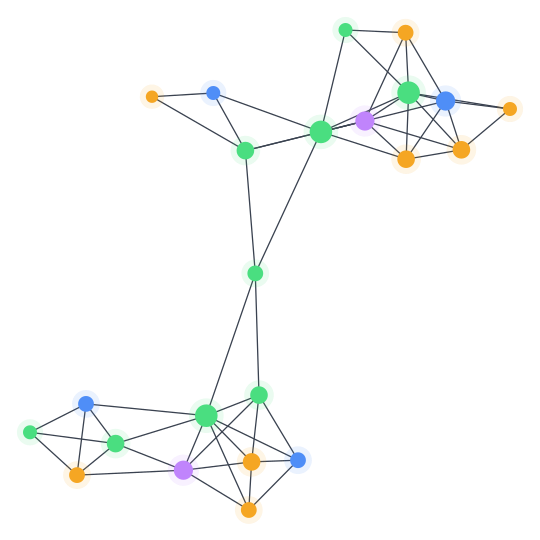

🧠Second Brain AI
A Primer on Spaced Repetitionsource · links [[Anki]]
Hermann Ebbinghausperson · [[Forgetting Curve]]
Zettelkastenconcept · [[Atomic Notes]]
Synthesis: Learning That Sticks6 notes, one insight
Everything you read,
connected.
Save an article, video or PDF. AI turns it into linked notes in your Obsidian vault.
@NiteshTechAIgithub.com/nitesht2/second-brain-ai